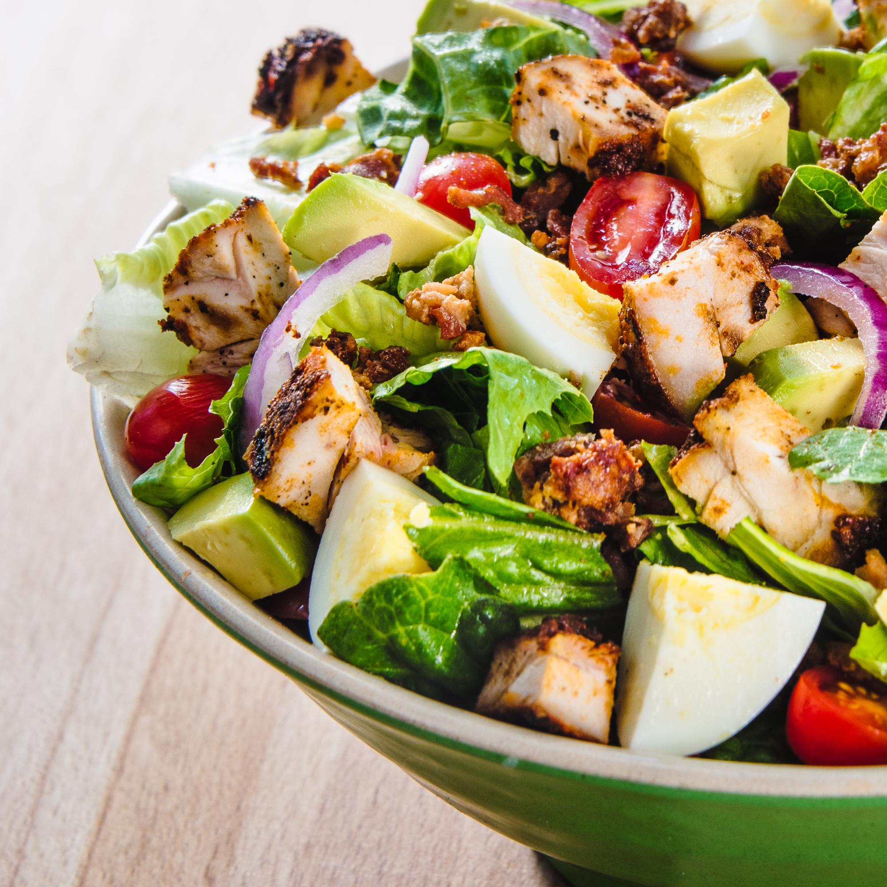

Fresh salad right to your door!
CREATING FRESH EVERY DAY
We've been making salads since before they were cool. And now more than ever, we’re obsessed with fresh. We believe a salad is only as good as where it comes from. That’s why we source the best growers for bigger taste.
It’s why we chop fresh all day, every day. From our kale to our carrots to our quinoa, our promise is as fresh as it gets. At AYD.com, this is where it all began. Making salads for the people. By the people. And we plan on making them for a very long time. Because there’s nothing trendy about fresh.
